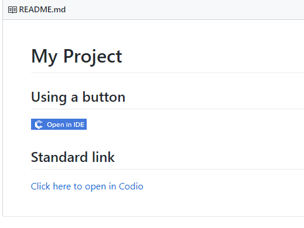
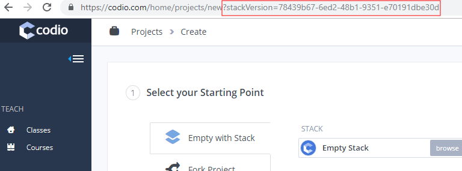
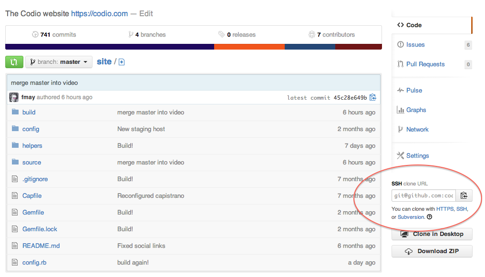
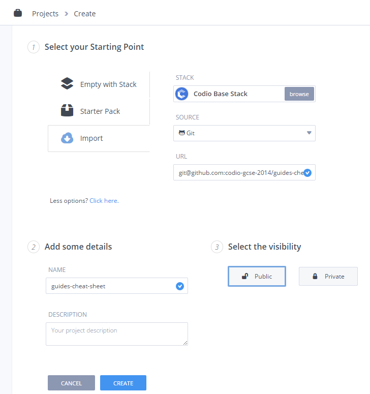
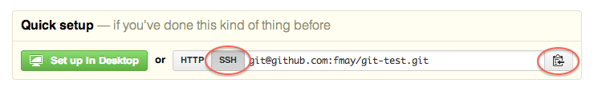

Git and GitHub¶
Git and GitHub are preinstalled, as well as Mercurial and SVN. You can open a Terminal window to access them from the command line. The Tools > Git menu includes options for using Git.
You can also configure your .codio file to create a Run menu from which you can access common commands in the Codio IDE. See Customize Run Button for more information.
If you are new to Git, refer to the following to get started:
Git is simpler than you think (explains how Git works rather than teaching you usage).
Use Git without remote repos¶
You can use Git commands in your Codio project without using a remote repo, providing more collaborative capabilities and comprehensive version control. However, you can add a remote repository, such as GitHub (recommended), if you want to save your code in more than one location as a back up.
To add a repo, click Tools > Git > Remotes.
View GitHub repos¶
GitHub let’s you browse around a repo but it’s not the same as using an IDE. Codio gives you a great way of viewing any GitHub (or Git) repo. For web apps, you can even run and preview in Codio.
Provide link to project in readme.md file¶
You can include a link to your project in the project readme.md file that initiates the creation of a project and imports it from the repo into the users Codio account. When you make changes to your repo, the changes are automatically shown in Codio since a brand new Codio project is created whenever the link is clicked. If a project with the same name already exists, users can change the name on the project creation page.

To create the link in your GitHub README.md file (or anywhere else for that matter), enter the following:
https://codio.com/home/projects/new?importType=git&activeTab=3&name=your_codio_project_name&importGitUrl=git@github.com:your_github_name/your_repo_name&stackVersion=stack_version_id
To specify a specific branch (for example, you have a demo or GitHub Pages site that you want to load into Codio), enter the following:
https://codio.com/home/projects/new?importType=git&activeTab=3&name=your_codio_project_name&importGitUrl=git@github.com:your_github_name/your_repo_name&branch=other_branch&stackVersion=stack_version_id
Find stack version ID¶
To find the appropriate stack to use with your repo, go to Stacks in the Dashboard, choose the stack to be used, and click Use Stack. In the address bar, you can view the stack version ID to add to your link in the readme.md file.
Example showing the Empty Stack stack version ID:

You can use any method for linking to Codio but we recommend using the following images:
Manually import a Git repo into Codio¶
To manually import a Git repo into Codio, follow these steps:
In GitHub, click the Clone URL link in the right pane and copy to the clipboard.

If you are cloning using SSH, you must have already added the Codio SSH public key as described in Upload SSH Key to Remote Server.
Log in to Codio and click New Project.
Click the Click here link for more options.

In the Select your Starting Point area, click Import.
From the Source drop-down list, choose Git.
Paste the Git URL into the URL field and add details about the project.
Click Create. Codio loads the repo and displays it.
Create new GitHub repo from Codio¶
If you have code in Codio and want to create a new GitHub (or other remote) repo, follow these steps:
Create a new project in Codio or open up an existing project.
Open the terminal (Tools > Terminal), type git init and press Enter to initialize Git.
Create a new, empty repo on GitHub or other remote repo.
Copy the repo url to the clipboard.
Note
If you’re using GitHub, use the SSH url rather than https. Also make sure that your Codio public key is uploaded to your GitHub account or repo settings as described in Upload SSH Key to Remote Server.

In the Codio IDE, click Tools > Git > Remotes on the menu.
Click the Edit icon and enter the Name and paste the URL into the field. It is recommended you use origin as the name to confirm the normal standards. You do not need to specify a username or password if you are using SSH.
Click Save.
Check project status¶
Whenever you want to see the Git status of your project, enter git status. Initially, nothing will be returned until changes are committed.
$ git status
# On branch master nothing to commit, working directory clean
Track files¶
Codio uses Git by default and if you import a project from a Git repo, all the existing files are ready to be tracked. Tracking means that Git knows about them. If you add a new file, Git does not know about it and needs to be explicitly told:
Add a new file (test.txt) and then add a few random characters to it.
Open any other existing file and make a small change to it.
Run
git statusand you should see results similar to the following, which shows the modified and the new (untracked) files:
# On branch master ` # Changes not staged for commit:` # (use "git add ..." to update what will be committed) # (use "git checkout -- ..." to discard changes in working directory) # # modified: humans.txt # # Untracked files: # (use "git add ..." to include in what will be committed) # # test.txt no changes added to commit (use "git add" and/or "git commit -a")
To tell GitHub to track the file, enter one of the following commands:
git add .- tells Git to track all files in the project that are not yet tracked. This is the quickest and simplest way to track any new files.git add FILENAME- explicitly tracks a single file.
Stage files¶
A staged file is one that is tracked and is ready to commit to the repository. Once you run git add, the file is being tracked and staged. However, if you modify a tracked file, the modifications are not staged. To stage the file, rerun git add.
Commit your changes¶
Committing means that you want to add your staged files into the repository. You can commit using one of the following commands:
git commit -m 'commit message'- commits all staged files to the repo.git commit -a -m 'commit message'commits all staged files to the repo and also automatically stages any tracked files before committing them. If you use this command, you do not need to rungit addunless you want to add new, untracked files.
The commit message is important as it allows you to see what general changes are included in the commit. For example:
git commit -a -m "added test.txt and modified some stuff" and get
[master d3e6bb1] added test.txt and modified some stuff
2 files changed, 2 insertions(+)
create mode 100644 test.txt`
If you run a git status, you can see that everything is clean and up-to-date.
# On branch master nothing to commit, working directory clean
Revert code¶
You can revert your code back to an earlier commit to roll back your changes. Use one of the following commands to revert:
git revert 'commit id'- reverts back to the SHA (uid); you can see when you typegit log.git revert HEAD- reverts back to the last commit, deleting any uncommitted changes.git revert HEAD~n- reverts to the last n commit; for example, HEAD~3 reverts to the 4th last commit.git revert HEAD^^^- (count of ^ is like ~n) - reverts to the last n commit; for example, HEAD^^^4 reverts to the 4th last commit.
For more information about reverting code, see http://git-scm.com/docs/git-revert.html.
Push to a remote repository¶
If you have a remote repository configure, commit your changes using the git push origin master command, where:
- origin - is the name of the remote repo.
- master - is the name of the branch. When you create a new Codio project, a master branch is automatically created and appears in brackets at the top of the file tree next to the project name.
You can view your pushed commits in the GitHub repo.
Pull from a remote repository¶
If others are working remotely on the same code (not in Codio), they are also pushing their code to the GitHub repo. Run the git pull origin master command to pull in changes from the remote repo and automatically merge the code.
Resolve conflicts¶
When you pull in from the remote, you may get a conflict warning. This occurs if someone else has modified code in a way that Git cannot automatically resolve it, usually because you have been editing the same code.
You can minimize conflicts by committing small changes and pulling from master often.
To resolve the conflict, follow these steps:
Open the file. Something similar to the following is displayed:
<<<<<<< HEAD:index.html <div id="footer">contact : email.support@github.com</div> ======= <div id="footer"> please contact us at support@github.com </div> >>>>>>> iss53:index.html
Remove the code block that you do not want to keep. The top block is your code and the bottom comes from the code that is being merged. If you want to keep your code, modify as follows:
<div id="footer">contact : email.support@github.com</div>
If you want to keep the merged code, modify as follows:
<div id="footer"> please contact us at support@github.com </div>
Branches¶
When you create a branch, you are creating a new area to code. You then merge another branch (usually the master branch), into your new branch. From this point on, you can do whatever you want (add, commit, push etc) without impacting the master branch on any other branch. For more information about branching, see http://git-scm.com/book/en/Git-Branching-What-a-Branch-Is.
Use the following commands for branching:
git branch- creates a new branch.git checkout- switches to that branch (be sure to commit your current branch before switching to another branch so you don’t lose any unstaged files).git merge from-branch- merges code fromfrom-branchinto your current branch.
It is recommended that you switch to your master branch and pull in changes from the remote, and then switch back to your working branch and merge changes. This practice will minimize conflicts.
You can switch branches using the command line interface or from the Tools > Git > Switch Branch menu.
Active branch¶
You can see which branch is active by looking in the file tree. The top level item is the project name and the current branch is in brackets.
Basic commands¶
git status- shows the status of your current branch.git add .- adds all files, tracked or not, to the staged files.git commit -a -m- stages and commits all files to the snapshot.git push --set-upstream origin master- Run this command the first time you push to track the new remote.git push- used for subsequent pushes; this command pushes all committed changes of themasterbranch to the tracked remote (origin).